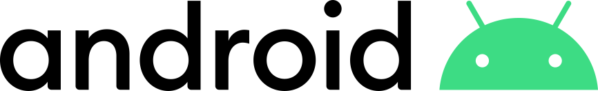
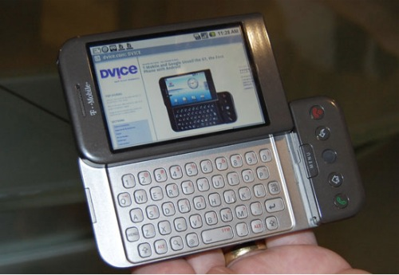

Android is a mobile operating system based on a modified version of the Linux kernel and other open source software, designed primarily for touchscreen mobile devices such as smartphones and tablets. Android is developed by a consortium of developers known as the Open Handset Alliance and commercially sponsored by Google. It was unveiled in November 2007, with the first commercial Android device launched in September 2008. It is free and open source software; its source code is known as Android Open Source Project (AOSP), which is primarily licensed under the Apache License. Android logo since 2019 However most Android devices ship with additional proprietary software pre-installed, most notably Google Mobile Services (GMS) which includes core apps such as Google Chrome, the digital distribution platform Google Play and associated Google Play Services development platform. About 70 percent of Android smartphones run Google's ecosystem; competing Android ecosystems and forks include Fire OS (developed by Amazon) or LineageOS. However the "Android" name and logo are trademarks of Google which impose standards to restrict "uncertified" devices outside their ecosystem to use Android branding. The source code has been used to develop variants of Android on a range of other electronics, such as game consoles, digital cameras, portable media players, PCs and others, each with a specialized user interface. Some well known derivatives include Android TV for televisions and Wear OS for wearables, both developed by Google. Software packages on Android, which use the APK format, are generally distributed through proprietary application stores like Google Play Store, Samsung Galaxy Store, and Huawei AppGallery, or open source platforms like Aptoide or F-Droid. Android has been the best-selling OS worldwide on smartphones since 2011 and on tablets since 2013. As of May 2017, it has over two billion monthly active users, the largest installed base of any operating system, and as of August 2020, the Google Play Store features over 3 million apps. The current stable version is Android 11, released on September 8, 2020.
History
Android Inc. was founded in Palo Alto, California, in October 2003 by Andy Rubin, Rich Miner, Nick Sears, and Chris White. Rubin described the Android project as "tremendous potential in developing smarter mobile devices that are more aware of its owner's location and preferences".[17] The early intentions of the company were to develop an advanced operating system for digital cameras, and this was the basis of its pitch to investors in April 2004. The company then decided that the market for cameras was not large enough for its goals, and by five months later it had diverted its efforts and was pitching Android as a handset operating system that would rival Symbian and Microsoft Windows Mobile. Rubin had difficulty attracting investors early on, and Android was facing eviction from its office space. Steve Perlman, a close friend of Rubin, brought him $10,000 in cash in an envelope, and shortly thereafter wired an undisclosed amount as seed funding. Perlman refused a stake in the company, and has stated "I did it because I believed in the thing, and I wanted to help Andy." Since 2008, Android has seen numerous updates which have incrementally improved the operating system, adding new features and fixing bugs in previous releases. Each major release is named in alphabetical order after a dessert or sugary treat, with the first few Android versions being called "Cupcake", "Donut", "Eclair", and "Froyo", in that order. During its announcement of Android KitKat in 2013, Google explained that "Since these devices make our lives so sweet, each Android version is named after a dessert", although a Google spokesperson told CNN in an interview that "It's kind of like an internal team thing, and we prefer to be a little bit — how should I say — a bit inscrutable in the matter, I'll say". In 2010, Google launched its Nexus series of devices, a lineup in which Google partnered with different device manufacturers to produce new devices and introduce new Android versions. The series was described as having "played a pivotal role in Android's history by introducing new software iterations and hardware standards across the board", and became known for its "bloat-free" software with "timely ... updates". At its developer conference in May 2013, Google announced a special version of the Samsung Galaxy S4, where, instead of using Samsung's own Android customization, the phone ran "stock Android" and was promised to receive new system updates fast. The device would become the start of the Google Play edition program, and was followed by other devices, including the HTC One Google Play edition, and Moto G Google Play edition. In 2015, Ars Technica wrote that "Earlier this week, the last of the Google Play edition Android phones in Google's online storefront were listed as "no longer available for sale" and that "Now they're all gone, and it looks a whole lot like the program has wrapped up". Eric Schmidt, Andy Rubin and Hugo Barra at a 2012 press conference announcing Google's Nexus 7 tablet From 2008 to 2013, Hugo Barra served as product spokesperson, representing Android at press conferences and Google I/O, Google's annual developer-focused conference. He left Google in August 2013 to join Chinese phone maker Xiaomi. Less than six months earlier, Google's then-CEO Larry Page announced in a blog post that Andy Rubin had moved from the Android division to take on new projects at Google, and that Sundar Pichai would become the new Android lead. Pichai himself would eventually switch positions, becoming the new CEO of Google in August 2015 following the company's restructure into the Alphabet conglomerate, making Hiroshi Lockheimer the new head of Android. In June 2014, Google announced Android One, a set of "hardware reference models" that would "allow [device makers] to easily create high-quality phones at low costs", designed for consumers in developing countries. In September, Google announced the first set of Android One phones for release in India. However, Recode reported in June 2015 that the project was "a disappointment", citing "reluctant consumers and manufacturing partners" and "misfires from the search company that has never quite cracked hardware". Plans to relaunch Android One surfaced in August 2015, with Africa announced as the next location for the program a week later. A report from The Information in January 2017 stated that Google is expanding its low-cost Android One program into the United States, although The Verge notes that the company will presumably not produce the actual devices itself. Google introduced the Pixel and Pixel XL smartphones in October 2016, marketed as being the first phones made by Google, and exclusively featured certain software features, such as the Google Assistant, before wider rollout. The Pixel phones replaced the Nexus series, with a new generation of Pixel phones launched in October 2017.
Hardware
The main hardware platform for Android is ARM (the ARMv7 and ARMv8-A architectures), with x86 and x86-64 architectures also officially supported in later versions of Android. The unofficial Android-x86 project provided support for x86 architectures ahead of the official support. The ARMv5TE and MIPS32/64 architectures were also historically supported but removed in later Android releases. Since 2012, Android devices with Intel processors began to appear, including phones and tablets. While gaining support for 64-bit platforms, Android was first made to run on 64-bit x86 and then on ARM64. Since Android 5.0 "Lollipop", 64-bit variants of all platforms are supported in addition to the 32-bit variants.
Reception
Market Share
According to a Statistica's estimate, Android smartphones had an installed base of 1.8 billion units in 2015, which was 76% of the estimated total number of smartphones worldwide. Android has the largest installed base of any mobile operating system and, since 2013, the highest-selling operating system overall with sales in 2012, 2013 and 2014 close to the installed base of all PCs. In the second quarter of 2014, Android's share of the global smartphone shipment market was 84.7%, a new record. This had grown to 87.5% worldwide market share by the third quarter of 2016, leaving main competitor iOS with 12.1% market share. According to an April 2017 StatCounter report, Android overtook Microsoft Windows to become the most popular operating system for total Internet usage. It has maintained the plurality since then. In September 2015, Google announced that Android had 1.4 billion monthly active users. This changed to 2 billion monthly active users in May 2017.
Platform information
As of November 2020, Android 10 is the most popular version at 37% and Android 9.0 Pie the next most popular with 24%, giving those two latest releases well over half the share. In virtually all countries is Android 8.1 Oreo or later version most popular. In several countries is Android 10 alone at or over 50% share (or close to). Android 9.0 alone is also commonly near half of the market share, or over, on smartphones. One in four devices run on version older than Android 8.0, meaning not supported with security updates. On tablets, Android 5.1 Lollipop is the single most widespread version at 16.68% (most Android tablets use unsupported Android versions), and Android KitKat 10.0 thereafter at 13.97%. Android 10 has grown its share over 10-fold in 8 weeks. The usage share of Android on tablets varies a lot by country; still, Lollipop 5.1 is the single version with the greatest usage share in the United States at 32.27%, while a recent Pie 9.0 version is most widespread in e.g. Australia and India, some European countries, and Oreo 8.1 in China, and Egypt. In Australia, Android Pie 9.0 is the most popular at 30.22%, and in India at 25.94%. In some countries, such as Thailand and Kuwait, latest Android 10 is most popular at 20%.
| Version | Marketing name | Release date | API level | Runtime | Launched with |
|---|---|---|---|---|---|
| 11 | 11 | September 8, 2020 | 30 | ART | Google Pixel 2, Pixel 2 XL, Pixel 3, Pixel 3 XL, Pixel 3a, Pixel 3a XL, Pixel 4, Pixel 4XL |
| 10 | 10 | September 3, 2019 | 29 | ART | Pixel, Pixel XL, Pixel 2, Pixel 2 XL, Pixel 3, Pixel 3 XL, Pixel 3a, Pixel 3a XL |
| 9 | Pie | August 6, 2018 28 | 28 | ART | Essential Phone, Pixel, Pixel XL, Pixel 2, Pixel 2 XL, Nokia 7 Plus, OnePlus 6, Oppo R15 Pro, Sony Xperia XZ2, Vivo X21UD, Vivo X21, Xiaomi Mi Mix 2S |
| 8.1 | Oreo | December 5, 2017 | 27 | ART | Pixel, Pixel XL, Nexus 6P, Nexus 5X |
| 8.0 | August 6, 2018 | 26 | ART | N/A | |
| 7.1 | Nougat | October 4, 2016 | 25 | ART | Pixel, Pixel XL, Nexus 6P, Nexus 5X |
| 7.0 | August 22, 2016 | 24 | ART | Nexus 5X, Nexus 6P |